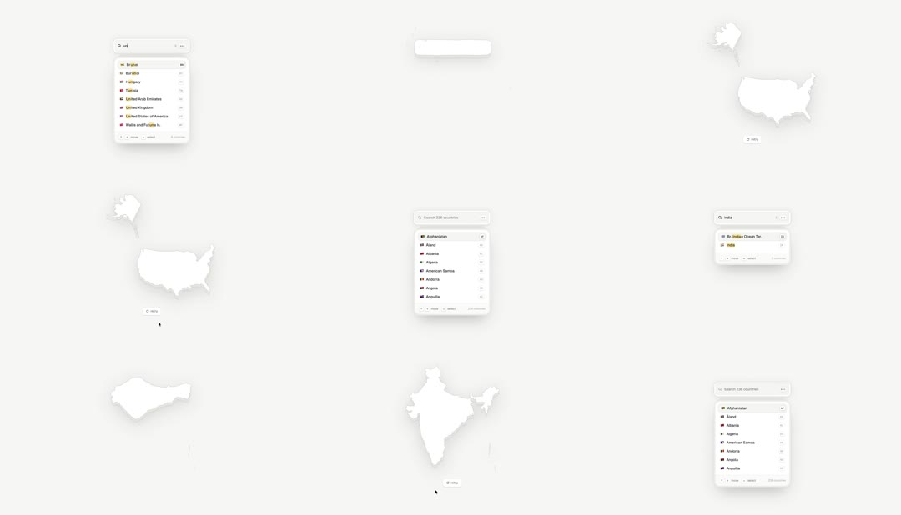

Country picker over a living map: a search dropdown ('Search 236 countries') filters flag rows as you type; picking a country drops a soft white silhouette of that country (USA, India, Greenland...) onto the pale canvas with a gentle fade/scale settle; multiple picks accumulate on the map.
Media
Frame-by-frame

0-20%
Dropdown open, full A-Z list with flag emoji rows and checkboxes; faint map silhouettes already on canvas.
20-45%
Typing 'un' narrows to 7 rows (Brunei, Burundi... United States); highlight follows keyboard.
45-65%
Selecting 'United States': row checks, and a white US silhouette materializes on the canvas - scales from ~0.9 with a soft shadow, opacity 0->1.
65-85%
Search 'india': rows filter; India picked - its silhouette fades in at its own canvas spot.
85-100%
Canvas accumulates silhouettes (USA, India, Greenland); dropdown resets to full list when cleared.
Build prompt
Rebuild this interaction 1:1: a country picker over a living map - a search dropdown ("Search 236 countries") filters flag rows as you type; picking a country drops a soft white silhouette of that country onto the pale canvas with a gentle fade/scale settle; multiple picks accumulate on the map.
## Integration
Integration: stack-agnostic spec - springs given as stiffness/damping, timed motions as duration + curve, canvas/shader notes are perf guidance only; map every value to your framework and animation library of choice.
## Scene
Pale canvas (map field). Top: search input "Search 236 countries". Dropdown: A-Z rows with flag emoji + name + checkbox. Canvas accumulates white country silhouettes with soft shadows (USA, India, Greenland...).
## Motion spec
Pattern: type-ahead + accumulating canvas.
- Typing: list filters instantly per keystroke (row height collapse 150ms); keyboard highlight follows arrows.
- Selection: row checks (150ms); the country's silhouette materializes on the canvas at its own spot - opacity 0 -> 1, scale 0.9 -> 1, 400ms ease-out, with a soft shadow.
- Multiple picks accumulate; clearing the search resets the dropdown to the full list.
## Calibration
- Silhouette entrance 400ms with a 0.9 -> 1 settle - a landing, not a pop.
- Filter response is per-keystroke instant; any debounce over 50ms feels broken.
- Silhouettes are soft white with soft shadows on the pale field - tonal, not outlined.
## Reduced motion
Silhouettes fade in (150ms opacity only), no scale.
## Don't miss
- Each silhouette lands at its own canvas position - the accumulation builds a personal map, not a stack.
- Flag emoji + name + checkbox row anatomy stays consistent while filtering.
- The dropdown and canvas are one composition - the canvas is visible behind/around the open list.
Mechanics
trigger
typing (filter) + row selection
elements
search input, filtered row list, map canvas with country silhouettes
properties
row list filtering (height collapse), silhouette opacity + scale, row check state
timing
filter instant per keystroke; silhouette entrance 400ms